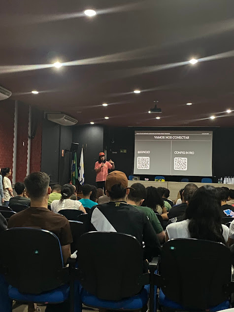
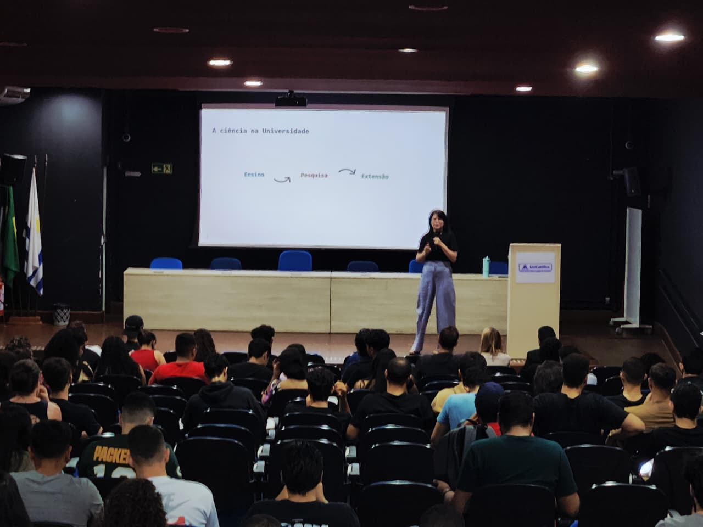
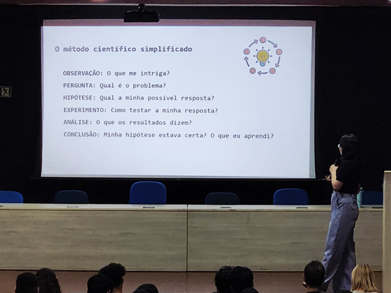
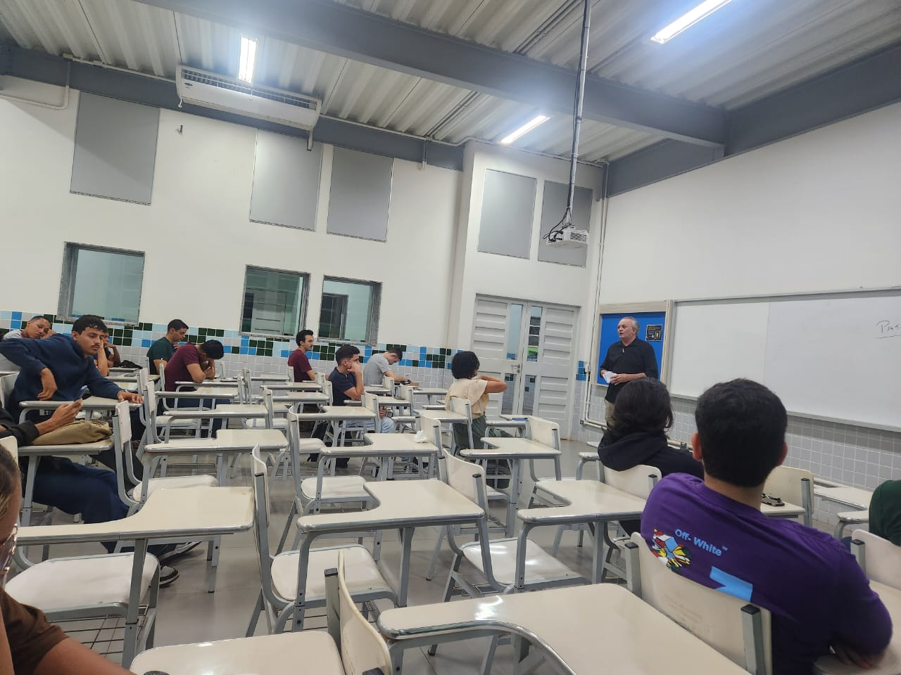

Bem-vindo ao
Registro do processo de aprendizagem
Estudante de Engenharia de Software. Atualmente, atuo como Suporte em Audiovisual pela Faculdade UniCatólica. No tempo livre, gamer casual e músico.
Aprendizados ao longo da disciplina de Redes de Computadores.
Na primeira aula de Redes de Computadores, não estive presente, pois ocorreu mais uma edição do FOF Palmas em parceria com a LAES, com a palestra do Juno, que trouxe diversos insights sobre as atualizações do Figma e sua um pouco sobre sua história pessoal.
Apesar disso, não deixei de acompanhar os conteúdos da disciplina. Realizei consultas com meus colegas que estavam presentes, fiquei a par de tudo que foi ministrado na sala de aula, dos métodos de avaliação e também dos conceitos iniciais sobre a internet.
Entidades reguladoras e padrões mundiais:
Modos de envio de dados:
Endereços e identificação:
Equipamentos:
Switch: Conecta dispositivos em uma rede local e encaminha pacotes para o destino correto usando o endereço MAC.
Monitoramento e segurança:
Protocolos e infraestrutura:
Classificação das redes: LAN (local), MAN (metropolitana), WAN (longa distância), PAN (pessoal).
Topologias: Barramento, estrela, anel, malha, híbrida.
Entendi que a organização em camadas permite isolar funções, facilitar a manutenção e garantir interoperabilidade entre diferentes tecnologias e fabricantes. Também explorei conceitos como transmissão de pacotes, atrasos e perdas de dados, além da importância da padronização dos serviços de rede para o funcionamento da Internet.
Tópicos abordados:
Durante essa atividade pratiquei diversos comandos de rede diretamente no terminal, com o objetivo de compreender como ocorre a comunicação entre dispositivos em uma rede local e na internet.
Aprendi a identificar e interpretar as configurações de interface de rede utilizando o comando
ipconfig (Windows) e ifconfig (Linux), entendendo o papel do endereço IP,
gateway padrão, máscara de rede e fabricante da placa de rede.
Também explorei o comando ping, analisando como o protocolo ICMP verifica a
conectividade entre hosts e o significado de parâmetros como TTL e jitter, essenciais para avaliar a
qualidade da conexão.
Na camada de transporte, usei o comando netstat para observar conexões ativas, portas
utilizadas e estados de conexão, compreendendo como essas informações são úteis para diagnóstico e
segurança de redes.
Por fim, explorei a camada de aplicação com o comando nslookup, identificando nomes de
domínio e endereços IP associados, reforçando o entendimento sobre o funcionamento do DNS.
Essa atividade me proporcionou uma visão prática e integrada sobre o funcionamento das redes de computadores, desenvolvendo minha capacidade de diagnosticar problemas de conexão, interpretar rotas e protocolos, e compreender como as camadas do modelo TCP/IP se relacionam na comunicação entre sistemas.
Durante esta atividade, aprendi a utilizar o Cisco Packet Tracer, uma ferramenta de simulação de redes da Cisco que permite configurar e testar topologias de rede sem a necessidade de equipamentos físicos. Com isso, desenvolvi uma melhor compreensão sobre endereçamento IP, máscara de rede, configuração de dispositivos e testes de conectividade (ping).
Montei e configurei redes simples e intermediárias utilizando PCs, notebooks, impressoras, switches, roteadores e servidores. Também aprendi a configurar serviços como HTTP, FTP, DNS e DHCP, além de simular redes wireless com diferentes dispositivos.
Essa prática me ajudou a entender, de forma visual e interativa, como ocorre a comunicação entre dispositivos em uma rede local (LAN), e como cada elemento é essencial para o funcionamento de um ambiente de rede real. Com essa experiência, desenvolvi habilidades importantes como resolução de problemas, pensamento lógico, configuração de topologias e análise de conectividade fundamentais para um futuro profissional na área de redes e infraestrutura.
Nesta quarta-feira, 10/10/2025, nossa dinâmica foi uma palestra sobre o tema da pesquisa científica. Foram discutidos os benefícios de realizar esse tipo de projeto e a experiência de um aluno que deseja se envolver nessas práticas no ambiente acadêmico.
Pessoalmente, achei muito interessante; as informações foram valiosas para o nosso processo acadêmico, e o palestrante fez uma apresentação excelente.
 Nesta aula, o foco foi consolidar a base de endereçamento e introduzir a lógica de como as redes se conectam globalmente. Iniciamos com uma revisão prática de Cálculo de Sub-redes, onde reforcei o entendimento sobre a conversão binária da máscara para identificar o range de hosts válidos e a segmentação da rede.
Infraestrutura Física e Simulação
No contexto do Packet Tracer, esclareci as diferenças de cabeamento fundamentais para a montagem de laboratórios:
Também revisamos as topologias e o conceito de domínio de colisão em Hubs vs. Switches.
Introdução ao Roteamento IP
Aprofundei-me no papel do Roteador, entendendo que ele não apenas repassa dados, mas toma decisões para escolher a "melhor rota" até o destino final baseando-se em métricas (como retardo ou confiabilidade).
Refleti sobre as duas estratégias principais de gerenciamento dessas rotas:
Por fim, tive o primeiro contato teórico com os protocolos que gerenciam essa dinâmica, como o RIP, OSPF e BGP.
Nesta aula, iniciamos os estudos sobre Segurança da Informação, desmistificando a ideia de que existe proteção total. Aprendi que a segurança não é um estado absoluto, mas sim um processo contínuo de gerenciamento de riscos e economia, onde as defesas devem ser organizadas em camadas para dificultar ataques.
Normas e Planejamento
Fui apresentado às normas ISO 27000 (como a 27001 e 27002), que estabelecem vocabulário, requisitos e boas práticas para a implementação de um Sistema de Gestão de Segurança da Informação (SGSI). Entendi que planejar a segurança envolve princípios como "privilégio mínimo" (não dar mais acesso do que o necessário) e a integração da segurança desde o início do projeto.
Pilares da Segurança
Refleti sobre os cinco princípios essenciais que sustentam a proteção de dados:
Gestão de Riscos e Vulnerabilidades
Compreendi a relação entre Ativos (o que tem valor para a empresa, como hardware, software e pessoas), Ameaças (naturais ou intencionais) e Vulnerabilidades (fraquezas físicas, de software ou humanas). O processo de gestão de vulnerabilidades é cíclico: identificar, classificar, avaliar e corrigir.
Mecanismos de Controle
29/10 - Guilherme Carvalho
No dia 29/10, tivemos a presença de um convidado, Guilherme Carvalho, egresso da instituição, que atua na área de redes. Ele compartilhou um pouco de seus conhecimentos, aliás, é um excelente comunicador! Ensina muito bem e, na minha opinião, se daria muito bem como professor na área.
05/11 - Patricio
Já no dia 05/11, recebemos em sala o profissional Patricio (chefe do meu colega), que trouxe sua experiência na área de infraestrutura. Particularmente, gostei demais da palestra: foi muito aprendizado e achei interessante a forma como ele explicava. Outro que, na minha opinião, poderia fazer parte do quadro de professores do curso de Engenharia de Software.
Chegando ao fim da disciplina de Redes de Computadores, e analisando não apenas o conteúdo técnico absorvido, mas como esse processo contribuiu para minha formação como Engenheiro de Software.
A dinâmica das aulas, mesclando a teoria (como o Modelo OSI) com a prática visual (Cisco Packet Tracer), foi essencial. Confesso que, inicialmente, redes pode parecer um tema abstrato, mas as simulações tornaram os conceitos "palpáveis".
Um ponto alto foi a oportunidade de ouvir profissionais atuantes no mercado, como o Guilherme e o Patricio. Ver a teoria sendo aplicada no dia a dia de grandes infraestruturas mudou minha percepção sobre a importância da disciplina. Mesmo quando precisei me ausentar (como na aula inaugural durante o FOF Palmas), mantive o compromisso de buscar o conteúdo com colegas, para que nenhum conteúdo ficasse para trás.
Meu estudo individual foi focado na prática. Percebi que apenas ler os slides não era suficiente para fixar conceitos como o Cálculo de Sub-redes, que foi, sem dúvida, meu maior desafio técnico. A matemática binária e a lógica de segmentação exigiram que eu me dedicasse mais, refazendo exercícios até entender a lógica por trás da máscara de rede.
Outra dificuldade foi entender a questão de protocolos de segurança. A solução foi organizar o conhecimento em "camadas", assim como o modelo de rede, estudando um tópico de cada vez para não me sobrecarregar.
A organização deste portfólio foi, por si só, uma ferramenta de estudo. Ao ter que sintetizar as aulas e transcrever o que aprendi para uma linguagem clara no site, acabei revisando e fixando o conteúdo. Optar por desenvolver o portfólio em código (HTML/CSS) em vez de usar ferramentas prontas foi uma escolha proposital para aprender e entender sobre o conceito básico de uma aplicação web, e dando uma melhor base para aprender sobre desenvolvimento para web.
Como futuro Engenheiro de Software e almejando a posição de Tech Lead, entendo agora que não existe software robusto sem uma rede confiável. Compreender latência, protocolos (TCP/UDP), segurança e como os dados trafegam é o que diferencia um desenvolvedor que apenas "faz código" de um que entende a arquitetura completa da solução.
Saio desta disciplina com a certeza de que a infraestrutura é o alicerce onde minhas futuras aplicações irão rodar, e saber dialogar com a equipe de redes será um diferencial na minha carreira.